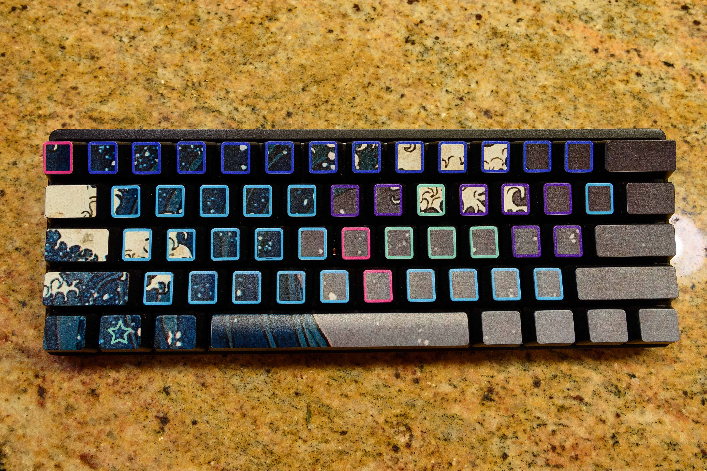
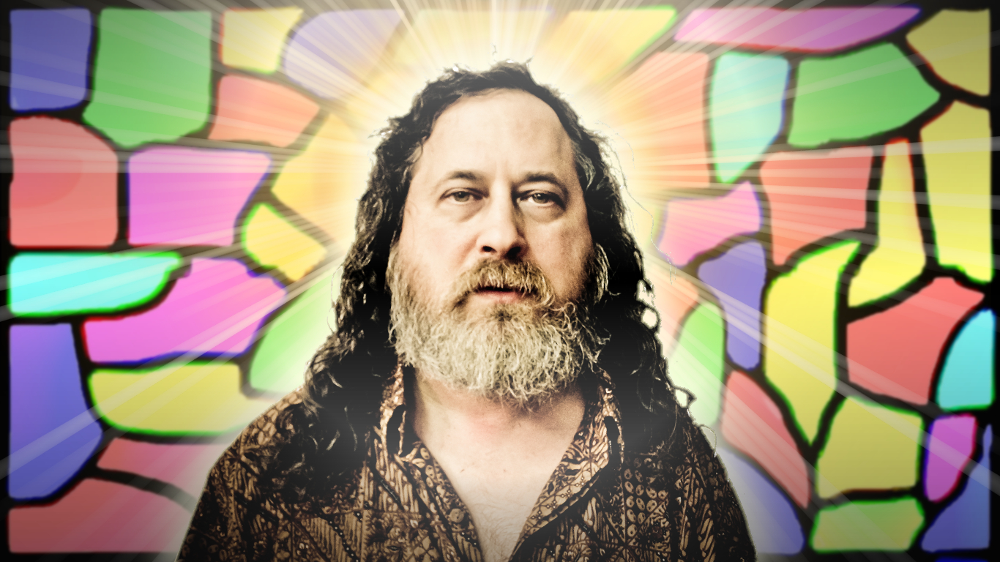
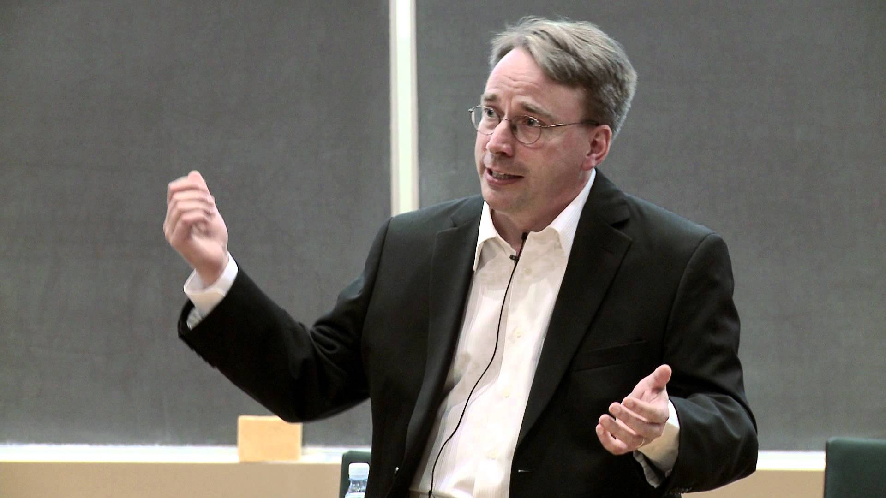
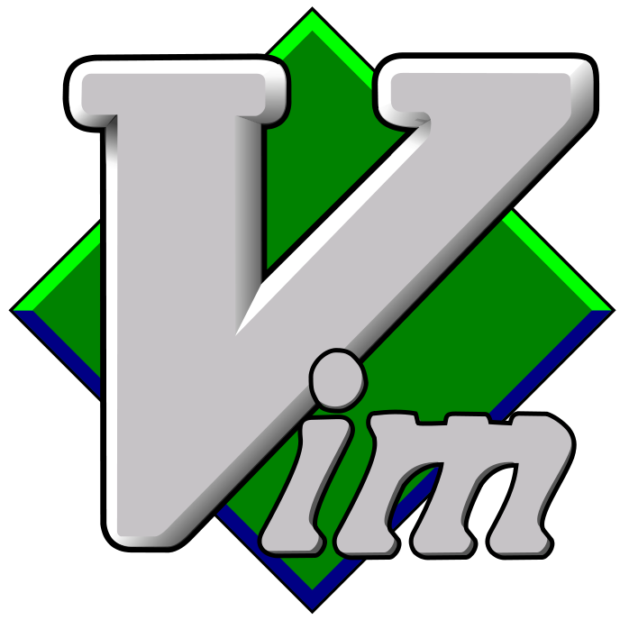
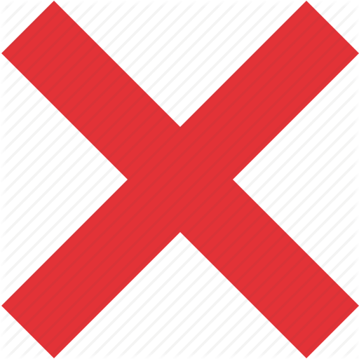
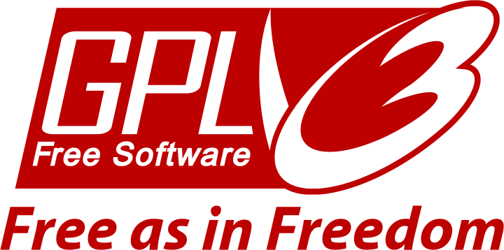

Created: 2018-10-11 Thu 15:17

There was a great philosopher and a great engineer.


0: day[0]->add_compiler(); 1: day[1]->create_debugger(); 2: day[2]->make_best_editor_ever();


2: if (kernel.c_str() == "linux") 3: { 4: kernel->be_awesome(); 5: } 6: else 7: { 8: printf("%s \n", "Oh no you're doing it wrong :("); 9: }
